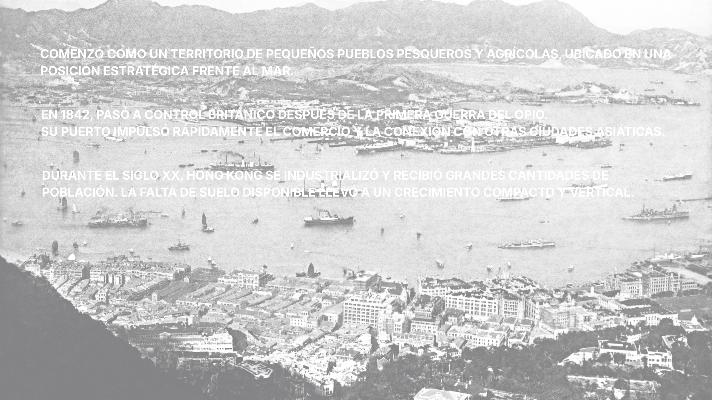
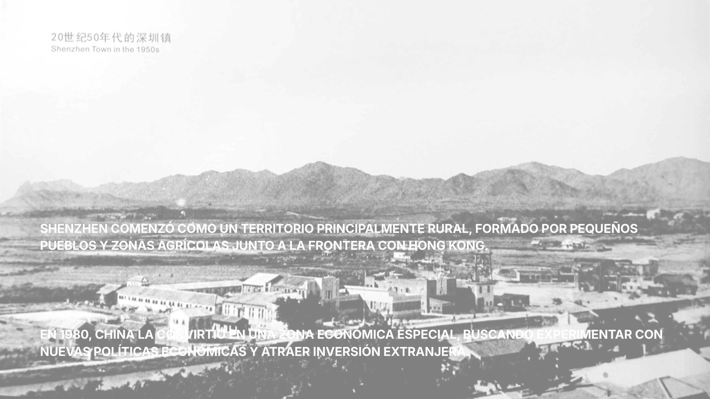
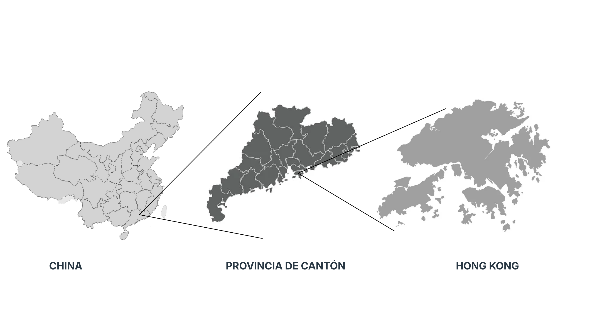
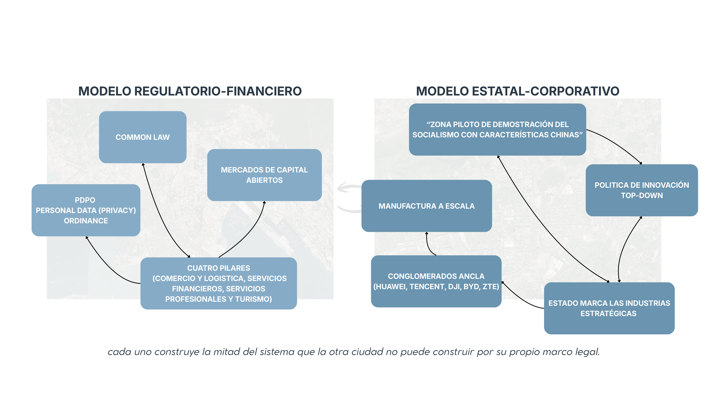
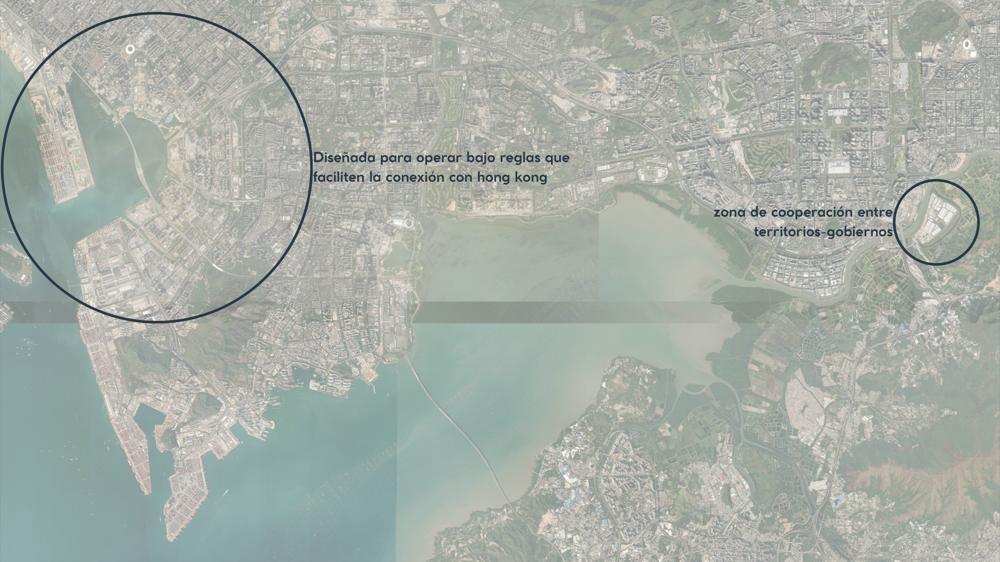
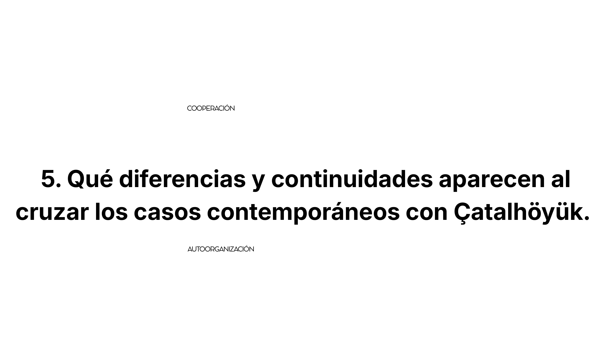
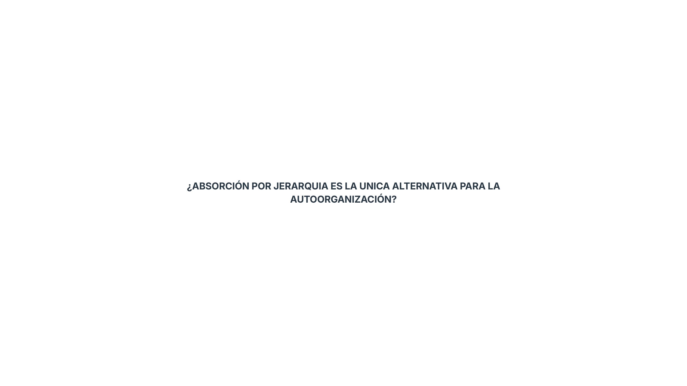
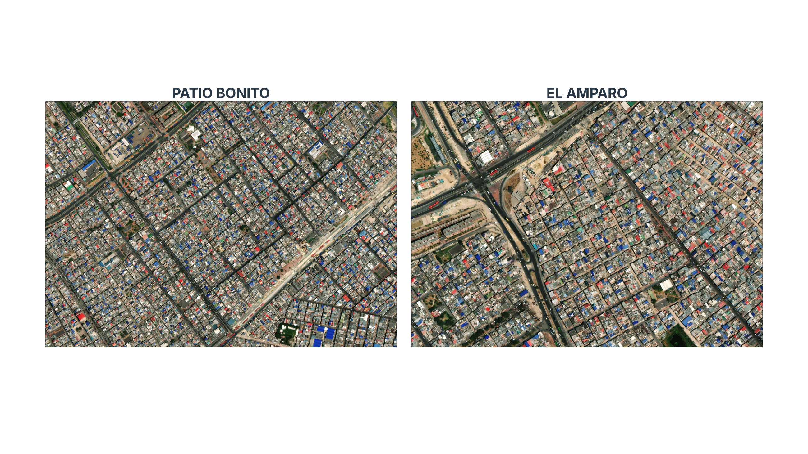
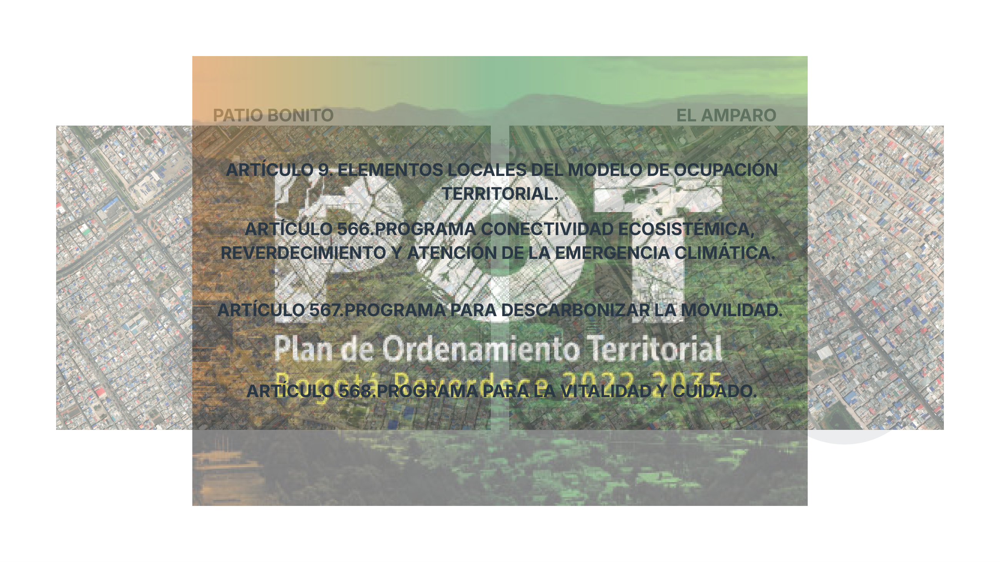
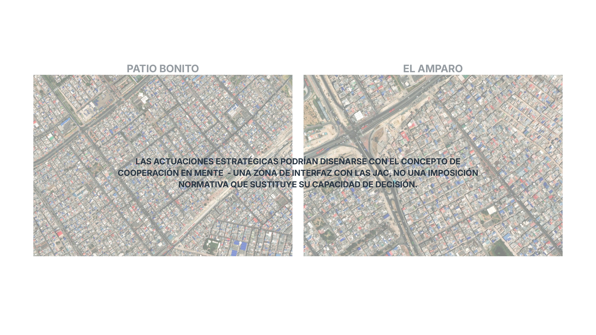

¿Quién concentra la capacidad de decisión cuando la ciudad se digitaliza? Un fotoensayo visual entre la simbiosis transfronteriza de Hong Kong y Shenzhen, la memoria celular de Çatalhöyük y la resistencia territorial en Bogotá (Kennedy, Patio Bonito y Corabastos).
Explorador Satelital de los 4 Territorios de Estudio
Zona Delimitada 01
Victoria Harbour & Kowloon
Densidad vertical confinada por el 40% de parques orográficos protegidos y régimen leasehold.
22.2855° N, 114.1577° EEscala: TOD Vertical
01
Génesis & Morfología
Dos Ciudades, Dos Lógicas de la Densidad
En 1842, Hong Kong pasó a control británico tras la Guerra del Opio. Ante la escasez de suelo plano y la protección estricta del 40% de parques orográficos, configuró un modelo vertical hipercompacto sobre estaciones de transporte masivo (TOD). A escasos kilómetros, en 1980, Shenzhen fue declarada Zona Económica Especial (ZEE), convirtiéndose en cuatro décadas en la fábrica global de hardware.

Fig. 1.1 — Hong Kong 1842
De puerto colonial a rascacielos hiperdensos por contención de relieve.

Fig. 1.2 — Shenzhen ZEE 1980
Laboratorio de experimentación económica y apertura tecnológica global.

Fig. 1.3 — El Delta de Cantón
Contigüidad geográfica de dos sistemas normativos complementarios.
«Cada ciudad construye la mitad del sistema que la otra no puede erigir por su marco legal: Hong Kong aporta el régimen de Common Law y finanzas; Shenzhen la manufactura a escala y la planificación estratégica estatal.»
🖱️ Arrastra fondo para Rotar 360° • Arrastra Nodos individuales con física • Clic en nodo para fijar datos
Nodo
Información.
02
Gobernanza & Datos
¿Quién Concentra la Capacidad de Decisión?
Cuando la ciudad se digitaliza bajo la retórica de la Smart City, la pregunta crucial no es tecnológica sino política: ¿quién concentra la capacidad de decisión sobre los datos, la infraestructura y el riesgo?
Matriz de Gobernanza Urbana y DigitalAnálisis Comparado
Dimensión
Hong Kong (Modelo Financiero-Regulatorio)
Shenzhen (Modelo Estatal-Corporativo)
Marco Legal
Common Law, ordenanza PDPO de privacidad y mercados de capital abiertos.
Poder legislativo delegado; Zona Demostración del Socialismo con Características Chinas.
Inversión I+D
Baja intensidad histórica (~1% PIB); economía dominada por especulación inmobiliaria.
6.46% del PIB (2024) con gigantes ancla: Huawei, Tencent, DJI, BYD, ZTE.
Fractura Urbana
Mercado inmobiliario menos asequible del mundo y viviendas subdivididas (cage homes).
Población flotante no-hukou y dualidad entre rascacielos y aldeas urbanas (Chengzhongcun).

Fig. 2.1 — La Bifurcación
Comercio abierto frente a producción de hardware a escala mundial.

Fig. 2.2 — Zonas de Interfaz
Qianhai y Lok Ma Chau: enclaves diseñados para hibridar ambos marcos.
«Centralizar la infraestructura para ganar eficiencia concentra también el riesgo. La innovación surge de la diversidad y la incertidumbre; la planificación directiva tiende a reducir ambas.»
🖱️ Arrastra fondo para Rotar 360° • Arrastra Nodos individuales con física • Clic en nodo para fijar datos
Nodo
Información.
03
Arqueología & Autoorganización
Çatalhöyük: La Malla Celular Sin Calles
En Çatalhöyük (Anatolia, 7500 a.C.), la densidad extrema prescindió de calles y de palacios autoritarios. La circulación ocurría sobre los techos y las viviendas adosadas formaban una malla continua peer-to-peer (P2P) basada en la cooperación vecinal.

Fig. 3.1 — Continuidad Celular
Hábitat denso y adosado sin segregación clasista ni poder central.

Fig. 3.2 — La Pregunta Crítica
¿La absorción por jerarquía es la única alternativa para la autoorganización?
🖱️ Arrastra fondo para Rotar 360° • Arrastra Nodos individuales con física • Clic en nodo para fijar datos
Nodo
Información.
04
Territorio Popular & Abastecimiento
Bogotá: Corabastos y la Concentración Silenciosa
En Kennedy, Patio Bonito y El Amparo nacieron de luchas populares y autogestión barrial (1985–2006). Al lado, Corabastos concentra 12.000 ton/día de alimentos de Colombia. Las Actuaciones Estratégicas del POT no deben ser decretos de imposición, sino zonas de interfaz y diálogo con las Juntas de Acción Comunal (JAC).

Fig. 4.1 — Tejido Barrial
Patio Bonito y El Amparo frente a la infraestructura de Corabastos.

Fig. 4.2 — Instrumentos POT
Art. 9, 566, 567 y 568: conectividad ecosistémica y cuidado.

Fig. 4.3 — Interfaz con JAC
Actuaciones estratégicas diseñadas como interfaz de cooperación comunitaria.
«La pregunta no debería ser: ¿Qué está mal en Corabastos?
Sino: ¿En qué otros nodos de la red de Kennedy ya ocurrió esa misma concentración silenciosa de poder de decisión sin consenso colectivo?»
✦ Topología 3D: Red Territorial & Concentración (Kennedy - Corabastos)
Velocidad:1.4x
🖱️ Arrastra fondo para Rotar 360° • Arrastra Nodos individuales con física • Clic en nodo para fijar datos